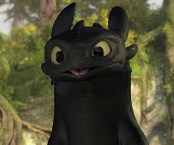
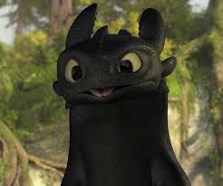

Oh, hey!
A little about myself...
Technical Background
I've been working in QA for about two years now!
Currently, I'm working with SQL. I've gotten a lot of hands on experience at Power. Data is really interesting and I find myself combing through our database quite a bit. The teams I work on support our Corporate Finance division. Our focus is automating compensation and surfacing that information to users. We also maintain and optomize various domains within payroll, sales, and accounting.
Previous programming language experience in: SQL, Java, Python, JavaScript, HTML, and CSS.
Career and Education History
Professionaly, I started working at an inpatient treatment facility for children. That was right after I graduated with my first Bachelor's in Psychology. I made the decision to switch careers and go back to school for Computer Science around 2018!
While working towards my second degree, I found myself in private tutoring. I was working as the Education Coordinator for several C2 Education centers across the greater Philadelphia area as well as NJ and MD.
Once I graduated from West Chester University with a CS degree, I was hired by Power Home Remodeling as a QA Tester. Now, I am applying to their Code Academy to learn how to be a Ruby Developer! I'm so excited for the opportunity to apply and potentially join Power as a future developer! I have never used Ruby before but I'm excited to learn :]
Personal Stuff
Children of the Fur
My three little weirdos. I adopted Momo and Simba as a bonded pair back in 2020. Winnie is new to the family, she was adopted in 2022.


 
